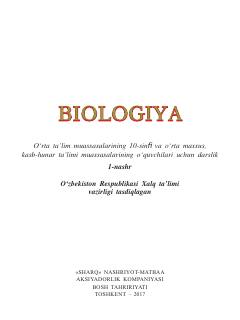

B110-sinf o'quvchilari uchun biologiya fanidan rasmiy darslik.
Mazkur darslik umumiy o'rta ta'lim muassasalarining 10-sinfi uchun mo'ljallangan bo'lib, biologik tizimlar, hayot darajalari va fanning asosiy tushunchalarini yoritadi. Kitobda biologiyaning tarmoqlari, ilmiy tadqiqot metodlari va ularning amaldagi ahamiyati haqida batafsil ma'lumot berilgan. Nashr o'quvchilarning ilmiy dunyoqarashi va ekologik tafakkurini kengaytirishga xizmat qiladi.